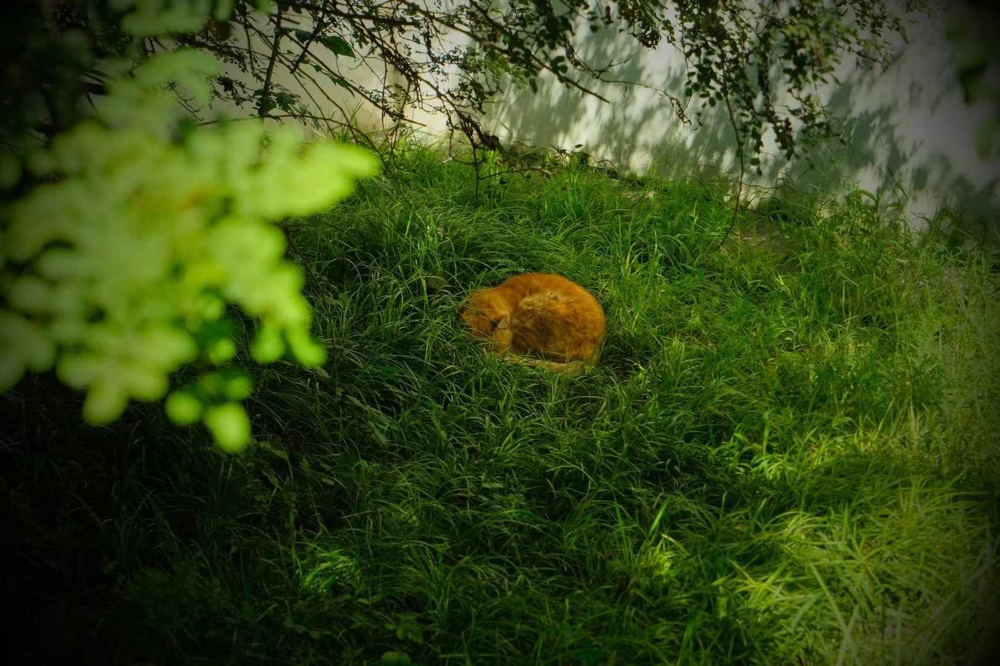
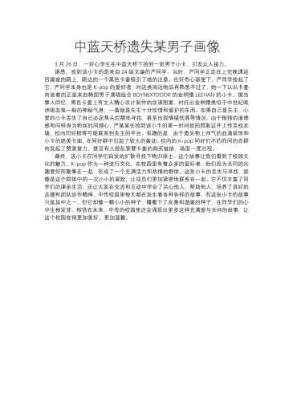
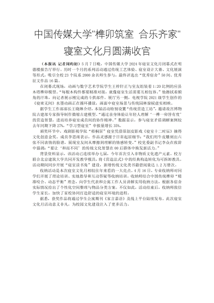
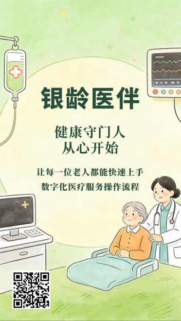

「那次的“没忍住”，最后把我带向了现在的方向。」


《银发族的数字生活指南》
核心构思：用趣味动画演示智能手机基础操作（如扫码、视频通话），用户可模拟“帮长辈解决一个数字难题”，生成操作步骤卡片。
创新点：以场景化交互降低老年人数字学习难度，传递代际关怀。

在年轻人熟悉的游戏语境中，解构大学生的日常、情绪与成长，打造“沉浸式校园游戏体验”
成片形式：校园生活＋游戏模拟
结构：抛弃了“重形式、轻内容”的错误创作思维，改成在校园中跟拍、采访随机的人。以创意为壳、以内容为核。
一条小路，把散落的能力连成现在的我。
我是周昀初，爱看、爱拍、爱记录，认真感受每一件小事。